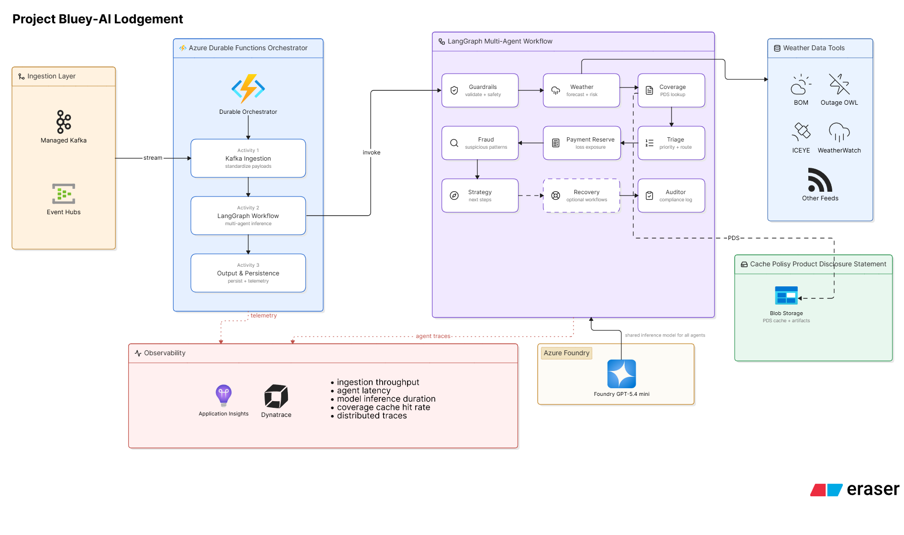

Architecting autonomous, compliant agent workflows at Allianz Services — powering 19 production journeys handling 100k+ claims/year with sub-2.5s graph latency and zero reported security breaches.
Quantified production outcomes delivered across regulated global enterprises (Allianz Services, Yash Technologies, Persistent Systems).
Declarative Multi-Agent State Graph Architecture with Dual-Emit Observability • Tier-1 Global Insurance GCC (Allianz Services)
When I joined Allianz Services, insurance claim lodgement was bottlenecked by legacy release cycles and strict regulatory oversight:
I architected a Declarative JSON Workflow Engine that decoupled prompt configurations, state transition routes, and tool schemas from the execution binary:

Stage 1 (Ingestion): Insurance claim payload received via Azure API Management gateway → queued into Kafka event buffer.
Stage 2 (Multi-Layer Guardrails): Azure Content Safety screens injection attacks → LangChain PII redaction middleware sanitizes citizen data prior to persistence.
Stage 3 (Declarative Graph Engine): JSON execution engine resolves 1 of 19 claim journey state graphs → LangGraph orchestrates cyclic agent nodes.
Stage 4 (Runtime Verification): Every discrete node validates output through strict Pydantic models → eliminates downstream type drift.
Stage 5 (Dual-Emit Observability): Distributed tracing spans emitted concurrently to Azure Application Insights and LangFuse.
Click or use keyboard (Enter/Space) on any node to inspect live state schemas, SLAs, and invariants.
Executes dynamic graph nodes based on the declarative JSON schema: Policy Verification, Fraud Detection, Damage Appraisal, and Settlement Triage.
{
"journeyId": "motor_comprehensive_claim_v4",
"currentNode": "damage_assessment_agent",
"pydanticValidation": "PASS",
"stateSchema": {
"coverageValid": true,
"excessAmount": 650.00,
"fraudScore": 0.04,
"autoApprovalEligible": true
}
}Prompt engineers and domain specialists define journeys in isolated JSON schema files versioned in Git, completely decoupled from backend service code.
Automated CI linting runs Pydantic boundary checks and validates state transition graphs against synthetic adversarial claim suites before merge.
Azure Durable Function worker pools pull updated AST trees directly into hot worker RAM. Zero container restarts or traffic interruptions.
Every discrete agent reasoning step, LLM token invocation, and tool execution emits distributed tracing spans to LangFuse and Azure App Insights.
Production JSON schema defining an entire claim journey. Business teams deploy this directly without recompiling or redeploying backend code.
{
"$schema": "https://allianz.internal/schemas/agentic_journey_v4.json",
"journeyId": "motor_comprehensive_claim_v4",
"description": "Autonomous comprehensive motor vehicle lodgement & triage",
"entryNode": "guardrail_safety_filter",
"stateSchema": "MotorClaimStateSchemaV4",
"timeoutSeconds": 45,
"nodes": [
{
"id": "guardrail_safety_filter",
"agent": "ContentSafetyAgent",
"failRoute": "reject_submission_escalation",
"invariants": { "piiRedaction": true, "injectionHalt": true }
},
{
"id": "policy_coverage_resolver",
"agent": "PolicyValidationAgent",
"requires": ["policyNumber", "incidentDate"],
"routes": {
"covered": "fraud_and_anomaly_evaluator",
"lapsed": "policy_lapsed_notification",
"ambiguous": "manual_underwriter_queue"
}
},
{
"id": "fraud_and_anomaly_evaluator",
"agent": "FraudDetectionAgent",
"parameters": { "threshold": 0.20, "weatherValidation": true },
"routes": {
"lowRisk": "automated_damage_settler",
"elevatedRisk": "investigation_triage_queue"
}
},
{
"id": "automated_damage_settler",
"agent": "SettlementTriageAgent",
"autoApproveThreshold": 5000.00,
"successRoute": "dispatch_settlement_payout"
}
]
}Decoupled JSON schemas added ~15ms cold session overhead during runtime graph compilation.
In-flight LangGraph state risked mutation loss during horizontal pod autoscaling or broker rebalance events.
LLM-based PII scrubbing added 350ms+ token latency and suffered non-deterministic omissions.
Production-grade multi-agent architectures, low-latency neural retrieval, and distributed serving delivered across global enterprises.
Problem & Context: Manual SQL query authoring created severe analytics bottlenecks and schema hallucination risks in high-concurrency enterprise databases.
sqlglot AST dialect validationProblem & Context: Developer onboarding documentation lookup was slow across fragmented repositories, while model serving suffered high latency under concurrency.
Problem & Context: Autonomous multi-agent swarms face non-deterministic state transitions and lack of deterministic rollback invariants at scale.
Toggle test payloads below to observe real-time routing, PII redaction, and deterministic guardrail containment—or scroll to trace the complete claim lifecycle.
Screen high-concurrency event streams via Azure Event Hubs and Apache Kafka. Raw claims are buffered into Azure Durable Functions orchestrators to eliminate cold starts and absorb burst traffic.
Before any stochastic model evaluates the payload, regex sanitizers and Azure Content Safety filter malicious prompt injection vectors and enforce strict Australian Privacy Principle (Australia Privacy Standards) compliance.
LangGraph state machines parse decoupled JSON configuration trees. Specialized micro-agents evaluate damage appraisals, validate policy coverage, and cross-examine deductible rules concurrently without state drift.
Automated payout approval or human-in-the-loop escalations dispatched to adjuster queues. Every single state mutation emits distributed tracing spans to LangFuse and Azure Application Insights for instant audit replay.
{
"event_id": "ev_98241a",
"status": "STREAM_INGEST",
"partition": "kafka-node-0",
"throughput": "High Volume"
}An intentional progression: from distributed search index pipelines at Persistent Systems to applied GenAI at Yash Technologies, to mission-critical multi-agent systems at Allianz Services.
Enterprise Autonomy & Production Resiliency
Insurance Captive / GCC handling massive claim workflows across Asia-Pacific.
Legacy claim intake pipelines required 3 weeks of backend developer engineering, schema re-compilation, and CI/CD validation to alter a single business lodgement rule. LLM stochastic nature risked compliance breaches under strict Australian insurance mandates.
Architected a Declarative JSON Workflow Engine separating prompt configurations and route logic from execution binaries. Incoming stream payloads from Kafka and Event Hubs are orchestrated through Azure Durable Functions and passed through Azure Content Safety and LangChain PII redaction before entering the LangGraph state machine.
Slashed new claim journey launch time from 3 weeks to < 24 hours. Scaled pipeline to process 100k+ annual claims across 19 distinct automated journeys with zero backend redeployment while adhering to Australian Privacy Principles (APP-19).
Why I build deterministic AI systems, how I scale multi-agent architectures, and what drives my engineering practice.
I’m an Agentic AI systems engineer based in Pune, India. Over the past 4+ years across Allianz Services, Yash Technologies, and Persistent Systems, I’ve specialized in the critical seam where non-deterministic LLMs meet unforgiving enterprise production requirements.
In regulated industries like insurance and financial infrastructure, an unverified state transition or leaked citizen PII isn't just an edge case—it's an operational failure. That experience shaped my conviction: true AI engineering isn't about clever prompt hacks; it's about robust system design—typed Pydantic invariants, declarative JSON state machines, Kafka event streaming, and millisecond-level audit observability.
When I'm not deploying multi-agent topologies into production, I run experiments in my open-source lab on memory compression and durable checkpointing, and mentor cross-functional engineering squads on declarative schema design and automated GitOps CI/CD.
LLMs are statistical sequence predictors, not verified state machines. Never allow an LLM to mutate system state without strict Pydantic runtime schema validation. If an agent output fails type boundaries, drop into a deterministic recovery gate immediately.
Every graph node output is strictly bound to typed schemas before downstream dispatch. Prompts and transition routes live in declarative JSON, eliminating backend binary redeployments and ensuring zero unvalidated state drift.
Sanitize before compute, never after. Pre-model guardrails, Azure Content Safety jailbreak shields, and LangChain PII redactors guarantee that zero untrusted or adversarial payloads reach foundational LLM reasoning layers.
Evaluating token-efficient episodic memory retrieval for long-horizon insurance settlement sessions.
Stress-testing durable state recovery across Kafka partition rebalances.
Benchmarking sub-second tool dispatch on Azure AI Foundry and vLLM clusters.